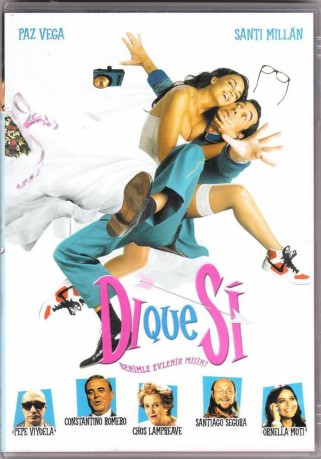

#8274 Sag' einfach Ja!
Alternativ: Di que sí
 
 IMDB-Wertung: 5.2 / 10
IMDB-Wertung: 5.2 / 10  Metascore: 0
Metascore: 0 
Eine Fernsehshow verkuppelt Paare. Doch Sexprotz Victor und Karrierfrau Estrella empfinden nichts füreinander. Sie heucheln wahre Liebe und geraten in die zweite Runde. Nun wollen die TV-Produzenten die beiden verheiraten. Doch um nicht zusammenzukommen, entwickeln die beiden einen Schlachtplan.
Jahr: 2004
Dauer: 85 Minuten
FSK: 6
Land: Spanien Studio: Sony Pictures Home EntertainmentTonspuren:
Untertitel:
Auflösung: 720p (1280x720) Größe: 2631 MB
Genre: Komödie
Regisseur: Juan Calvo
Drehbuch: Gudny Hagen
Soundtrack: Federico Jusid
Darsteller:
 Paz Vega als Estrella Cuevas
Paz Vega als Estrella Cuevas- Santi Millán als Víctor Martínez
 Santiago Segura als Oscar Vázquez
Santiago Segura als Oscar Vázquez Chus Lampreave als Madre de Víctor
Chus Lampreave als Madre de Víctor- Pepe Viyuela als Salvador Asensio, el vigilante jurado
 Ornella Muti als Francesca, la directora
Ornella Muti als Francesca, la directora- Carlos Gascón als Alex
 Daniel Grao als Azafato del programa
Daniel Grao als Azafato del programa- José Luis Torrijo als Realizador
- Constantino Romero als Amador Rosales
- Sagrario Calero als Taquillera
- Ana Chávarri als Vicky
- Guacimara Correa als Pili
- Luis Cuenca als Arturo
- Lucas Fuica als Sacerdote
- Begoña Guillén als Policia nacionales
- Manu Gómez als VTR
- José Miguel Litago als Vigilante Quinqui
- Albert López-Murtra als Policia nacionales
- Anna Mateeva als Rubia
- Rocío Mejías als Rosa
- Isidro Montalvo als Regidor
- Santiago Nogués als Juanjo
- Esperanza Pedreño als Vigilante Chica
- María Ripalda als Amiga madre de Víctor
- Marta Suárez als Yolanda
- Rosa Sáez als Operadora de camara
- Manuel Tallafé als Encapuchado
- Chema Trujillo als Chema
- Javier Ultra als Vigilante Tonto
Datei: X:\2004(N-Z)\Sag' einfach Ja! (2004, FSK6, 1280x720).mkv seit 16.02.2018
Festplatte: HD 2003-2004-2005(A-F)
 Es gibt insgesamt 54 Filme in der Gruppe '2004(N-Z)'
Es gibt insgesamt 54 Filme in der Gruppe '2004(N-Z)'